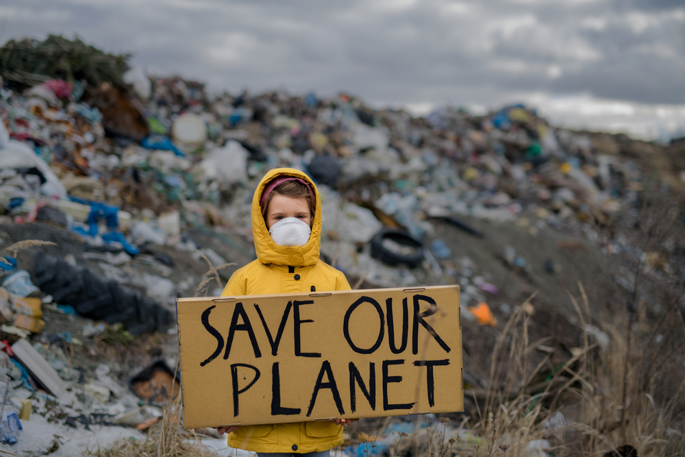

¡Bienvenido@s a Earth Alive!
Consecuencias del calentamiento global

¿Qué causa el calentamiento global?
Cuando las emisiones de combustibles fósiles se bombean a la atmósfera, cambian la química de nuestra atmósfera, permitiendo que la luz solar llegue a la Tierra pero impidiendo que el calor se libere al espacio. Esto mantiene la Tierra caliente, como un invernadero, y este calentamiento se conoce como efecto invernadero.
El dióxido de carbono es el gas de efecto invernadero más común y aproximadamente el 75% de toda la contaminación atmosférica que provoca el calentamiento climático. Este gas es producto de la producción y combustión de petróleo, gas y carbón. Aproximadamente una cuarta parte del dióxido de carbono también procede de la tala de tierras para la explotación maderera o agrícola.
El metano es otro gas de efecto invernadero común. Aunque sólo representa el 16% de las emisiones, es unas 25 veces más potente que el dióxido de carbono y se disipa más rápidamente. Eso significa que el metano puede provocar una gran chispa de calentamiento, pero acabar con la contaminación por metano también puede limitar rápidamente la cantidad de calentamiento atmosférico. Las fuentes de este gas incluyen la agricultura (sobre todo la ganadería), las fugas de la producción de petróleo y gas, y los residuos de los vertederos.
¿Cuáles son los efectos del calentamiento global?
Uno de los impactos más preocupantes del calentamiento global es el efecto que las temperaturas más elevadas tendrán sobre las regiones polares de la Tierra y los glaciares de montaña. El Ártico se está calentando cuatro veces más rápido que el resto del planeta. Este calentamiento reduce el hábitat crítico del hielo e interrumpe el flujo de la corriente en chorro, creando patrones meteorológicos más impredecibles en todo el mundo.
Un planeta más cálido no sólo aumenta las temperaturas. Las precipitaciones son cada vez más extremas a medida que el planeta se calienta. Por cada grado que sube el termómetro, el aire retiene un siete por ciento más de humedad. Este aumento de la humedad en la atmósfera puede producir inundaciones repentinas, huracanes más destructivos e incluso, paradójicamente, tormentas de nieve más fuertes.
El informe reciente subraya lo perturbador que puede ser un aumento global de la temperatura:
Los arrecifes de coral son ahora un ecosistema muy amenazado. Cuando los corales se enfrentan a un estrés ambiental, como el calor intenso, expulsan sus coloridas algas y se vuelven de un blanco fantasmal, un efecto conocido como blanqueamiento del coral. En este estado debilitado, mueren más fácilmente.
Los árboles mueren cada vez más a causa de la sequía, y esta mortalidad masiva está remodelando los ecosistemas forestales. El aumento de las temperaturas y los cambios en el régimen de precipitaciones hacen que los incendios forestales sean más frecuentes y estén más extendidos. Las investigaciones muestran que incluso se están desplazando hacia el este de EE. UU., donde los incendios han sido históricamente menos comunes.
El aumento de las temperaturas y los cambios en el régimen de precipitaciones hacen que los incendios forestales sean más frecuentes y estén más extendidos. Las investigaciones muestran que incluso se están desplazando hacia el este de EE. UU., donde los incendios han sido históricamente menos comunes.
Los huracanes son cada vez más destructivos y descargan más lluvia, lo que provocará más daños. Algunos científicos afirman que incluso debemos prepararnos para tormentas de categoría 6. (El sistema actual de clasificación termina en la categoría 5).
¿Cómio nos afecta?
Propagación de enfermedades
Un cambio de temperatura de varios grados puede hacer que la zona templada se haga más acogedora a la propagación de determinadas enfermedades. De esta manera, pueden empezar a darse casos de mal de Chagas, el dengue u otras enfermedades que están olvidadas en los países desarrollados y en zonas que tradicionalmente han sido más frías.
Este hecho afecta también a los países en desarrollo. Desde hace tiempo los investigadores afirmaron en un estudio de casos en Etiopía y Colombia realizado por científicos de las universidades de Denver (UD) y Michigan (UM), que el calentamiento global incrementa el peligro de contagiarse de malaria en altitudes altas. Además, advertían de que el aumento de un solo grado en la temperatura del ambiente tiene como consecuencia el desarrollo de 3 millones de casos de malaria más en Etiopía en pacientes de menos de 15 años.

Alimentos más caros
El cambio climático pone en peligro la producción de alimentos tan básicos como el trigo, y esto significa que cientos de miles de personas cuya vida depende de sus cultivos están en riesgo de perderlo todo. Y no solo eso: si los cultivos escasean, los precios se disparan. Esto nos afecta a todos y todas, pero en los países menos desarrollados, con altísimos índices de pobreza, las consecuencias pueden ser devastadoras. Además, el calentamiento global que provoca esta falta de alimento en la vida cotidiana de las personas deriva en guerras y migraciones de pueblos enteros que deben buscar un destino diferente donde encontrar alimento.